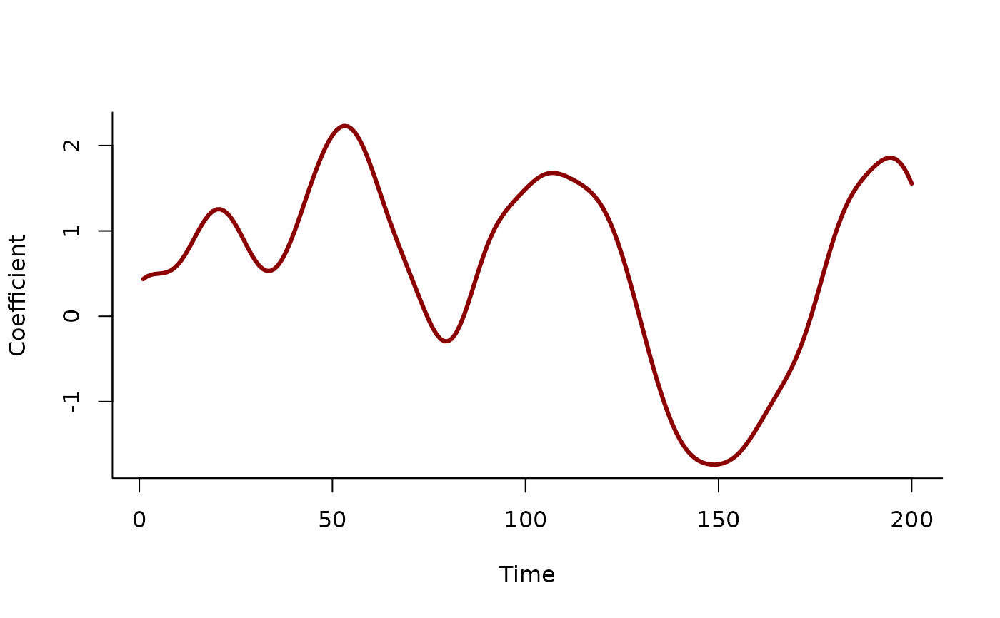

Set up time-varying (dynamic) coefficients for use in mvgam models. Currently, only low-rank Gaussian Process smooths are available for estimating the dynamics of the time-varying coefficient.
Arguments
- variable
The variable that the dynamic smooth will be a function of
- k
Optional number of basis functions for computing approximate GPs. If missing,
kwill be set as large as possible to accurately estimate the nonlinear function- rho
Either a positive numeric stating the length scale to be used for approximating the squared exponential Gaussian Process smooth (see
gp.smoothfor details) or missing, in which case the length scale will be estimated by setting up a Hilbert space approximate GP- stationary
Logical. If
TRUE(the default) andrhois supplied, the latent Gaussian Process smooth will not have a linear trend component. IfFALSE, a linear trend in the covariate is added to the Gaussian Process smooth. Leave atTRUEif you do not believe the coefficient is evolving with much trend, as the linear component of the basis functions can be hard to penalize to zero. This sometimes causes divergence issues inStan. Seegp.smoothfor details. Ignored ifrhois missing (in which case a Hilbert space approximate GP is used)- scale
Logical; If
TRUE(the default) andrhois missing, predictors are scaled so that the maximum Euclidean distance between two points is1. This often improves sampling speed and convergence. Scaling also affects the estimated length-scale parameters in that they resemble those of scaled predictors (not of the original predictors) if scale isTRUE.
Details
mvgam currently sets up dynamic coefficients as low-rank
squared exponential Gaussian Process smooths via
the call s(time, by = variable, bs = "gp", m = c(2, rho, 2)). These smooths, if specified with
reasonable values for the length scale parameter, will give more realistic out of sample forecasts
than standard splines such as thin plate or cubic. But the user must set the
value for rho, as there is currently no support for estimating this value in mgcv.
This may not be too big of a problem, as estimating latent length scales is often difficult anyway. The
rho parameter should be thought of as a prior on the smoothness of the latent dynamic coefficient
function (where higher values of rho lead to smoother functions with more temporal covariance structure.
Values of k are
set automatically to ensure enough basis functions are used to approximate the expected
wiggliness of the underlying dynamic function (k will increase as rho decreases)
Examples
# \donttest{
# Simulate a time-varying coefficient
# (as a Gaussian Process with length scale = 10)
set.seed(1111)
N <- 200
# A function to simulate from a squared exponential Gaussian Process
sim_gp = function(N, c, alpha, rho){
Sigma <- alpha ^ 2 *
exp(-0.5 * ((outer(1:N, 1:N, "-") / rho) ^ 2)) +
diag(1e-9, N)
c + mgcv::rmvn(1,
mu = rep(0, N),
V = Sigma)
}
beta <- sim_gp(alpha = 0.75,
rho = 10,
c = 0.5,
N = N)
plot(beta, type = 'l', lwd = 3,
bty = 'l', xlab = 'Time',
ylab = 'Coefficient',
col = 'darkred')

# Simulate the predictor as a standard normal
predictor <- rnorm(N, sd = 1)
# Simulate a Gaussian outcome variable
out <- rnorm(N, mean = 4 + beta * predictor,
sd = 0.25)
time <- seq_along(predictor)
plot(out, type = 'l', lwd = 3,
bty = 'l', xlab = 'Time', ylab = 'Outcome',
col = 'darkred')
# Gather into a data.frame and fit a dynamic coefficient model
data <- data.frame(out, predictor, time)
# Split into training and testing
data_train <- data[1:190,]
data_test <- data[191:200,]
# Fit a model using the dynamic function
mod <- mvgam(out ~
# mis-specify the length scale slightly as this
# won't be known in practice
dynamic(predictor, rho = 8, stationary = TRUE),
family = gaussian(),
data = data_train,
chains = 2,
silent = 2)
# Inspect the summary
summary(mod)
#> GAM formula:
#> out ~ s(time, by = predictor, bs = "gp", m = c(-2, 8, 2), k = 27)
#> <environment: 0x563fe28fdac0>
#>
#> Family:
#> gaussian
#>
#> Link function:
#> identity
#>
#> Trend model:
#> None
#>
#> N series:
#> 1
#>
#> N timepoints:
#> 190
#>
#> Status:
#> Fitted using Stan
#> 2 chains, each with iter = 1000; warmup = 500; thin = 1
#> Total post-warmup draws = 1000
#>
#>
#> Observation error parameter estimates:
#> 2.5% 50% 97.5% Rhat n_eff
#> sigma_obs[1] 0.22 0.24 0.27 1 736
#>
#> GAM coefficient (beta) estimates:
#> 2.5% 50% 97.5% Rhat n_eff
#> (Intercept) 3.9000 4.000 4.000 1 864
#> s(time):predictor.1 -0.4900 -0.020 0.480 1 146
#> s(time):predictor.2 0.6200 0.660 0.710 1 915
#> s(time):predictor.3 0.1700 0.330 0.500 1 146
#> s(time):predictor.4 -0.3400 -0.290 -0.240 1 939
#> s(time):predictor.5 0.0200 0.140 0.250 1 150
#> s(time):predictor.6 -0.7100 -0.670 -0.620 1 857
#> s(time):predictor.7 -0.3600 -0.270 -0.170 1 177
#> s(time):predictor.8 -0.2300 -0.180 -0.130 1 811
#> s(time):predictor.9 0.1500 0.250 0.330 1 199
#> s(time):predictor.10 -0.2000 -0.130 -0.065 1 789
#> s(time):predictor.11 0.0140 0.100 0.200 1 230
#> s(time):predictor.12 -0.4400 -0.360 -0.280 1 567
#> s(time):predictor.13 -0.0035 0.110 0.220 1 324
#> s(time):predictor.14 -0.2500 -0.160 -0.074 1 962
#> s(time):predictor.15 -0.0650 0.046 0.170 1 373
#> s(time):predictor.16 -0.0026 0.120 0.240 1 734
#> s(time):predictor.17 0.0780 0.220 0.380 1 384
#> s(time):predictor.18 -0.1100 0.043 0.190 1 714
#> s(time):predictor.19 0.0250 0.200 0.370 1 490
#> s(time):predictor.20 -0.2300 -0.035 0.170 1 1068
#> s(time):predictor.21 -0.2000 0.039 0.290 1 653
#> s(time):predictor.22 -0.4400 -0.170 0.120 1 899
#> s(time):predictor.23 -0.0280 0.250 0.570 1 957
#> s(time):predictor.24 -0.4300 -0.110 0.240 1 781
#> s(time):predictor.25 -0.2500 0.160 0.550 1 718
#> s(time):predictor.26 -0.6300 -0.220 0.190 1 821
#> s(time):predictor.27 -0.0840 0.460 1.000 1 146
#>
#> Approximate significance of GAM smooths:
#> edf Ref.df Chi.sq p-value
#> s(time):predictor 12.4 27 294 <2e-16 ***
#> ---
#> Signif. codes: 0 ‘***’ 0.001 ‘**’ 0.01 ‘*’ 0.05 ‘.’ 0.1 ‘ ’ 1
#>
#> Stan MCMC diagnostics:
#> ✔ No issues with effective samples per iteration
#> ✔ Rhat looks good for all parameters
#> ✔ No issues with divergences
#> ✔ No issues with maximum tree depth
#>
#> Samples were drawn using sampling(hmc). For each parameter, n_eff is a
#> crude measure of effective sample size, and Rhat is the potential scale
#> reduction factor on split MCMC chains (at convergence, Rhat = 1)
#>
#> Use how_to_cite() to get started describing this model
# Plot the time-varying coefficient estimates
plot(mod, type = 'smooths')
# Extrapolate the coefficient forward in time
plot_mvgam_smooth(mod, smooth = 1, newdata = data)
abline(v = 190, lty = 'dashed', lwd = 2)
# Overlay the true simulated time-varying coefficient
lines(beta, lwd = 2.5, col = 'white')
lines(beta, lwd = 2)
# }